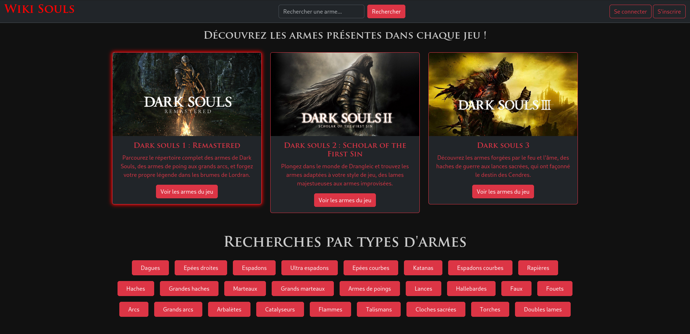

Présentation
Nom : Dewi GUERIN
Âge : 20 ans
Ville : Rennes
Parcours : Passionné par l’informatique depuis le lycée, je poursuis aujourd’hui un BTS SIO avec une spécialisation SLAM.
CV : Télécharger le CV
Présentation du BTS SIO
Le BTS Services Informatiques aux Organisations (SIO) forme à la gestion de projets informatiques, au développement, et à l'administration des systèmes et réseaux.
Certifications
- Certification PIX
- OpenClassrooms : Développement Web
Projets Réalisés
Wikisouls
Site web développé avec Laravel, le site répertorie les différentes armes des 3 jeux Dark Souls.

Voir sur GitHub
Synthèse des Réalisations
| Projet | Compétences Mobilisées | Liens & Documents |
|---|---|---|
| Gestion de Tâches | POO, Interface Graphique, Java | Voir le projet |